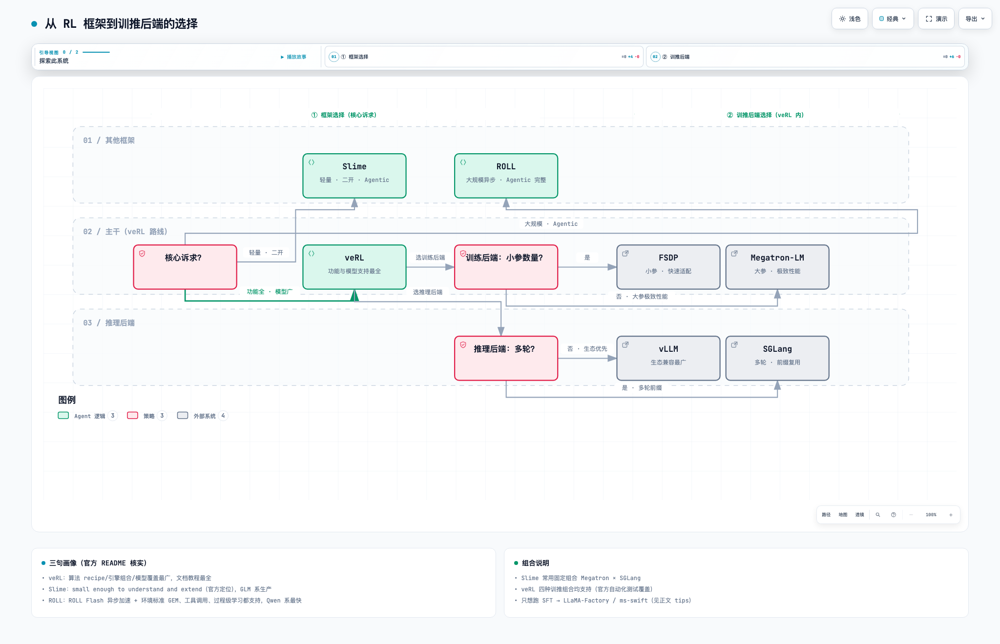

二、RL 实战
💡：这一章是实操，我觉得学RL最好的方式就是跑实验，只有跑了在各个环节碰到卡点了，你才会静下心去梳理，整个流程是什么样的，模块之间是怎么配合的。跑完整个RL我需要你回答几个问题：1.RL流程中推理和训练的时长分配如何，哪里是瓶颈？ 2.哪个计算环节的显存峰值高，为什么？3.怎么才算训好一个模型
1. 框架和训推后端选型

框架对比（生产级三家）：
| 维度 | veRL（字节） | Slime（智谱） | ROLL（阿里） |
|---|---|---|---|
| 定位 | 通用生产·研究主线，功能最全 | SGLang 原生，轻量、代码可读性优先 | 大规模生产 + Agentic 支持完整 |
| 训练引擎 | FSDP / Megatron | Megatron（直接使用 Megatron 参数配置） | Megatron-Core + FSDP2 + LoRA |
| 推理引擎 | vLLM / SGLang | SGLang 原生（内置请求路由器） | vLLM / SGLang |
| 异步 | v1 提供两种异步：训推同卡异步、训推分离异步 | 原生完全异步，数据经 Data Buffer 解耦传递 | ROLL Flash 异步加速，计算与通信部分重叠 |
| Agentic | agent_loop 组件（多轮工具调用） | 以 agent 为中心设计：多轮、工具、环境用同一套接口 | 支持完整：环境标准 GEM、工具调用、过程级奖励学习（GiGPO 算法） |
| 算法 | PPO/GRPO/DAPO/GSPO/REINFORCE++ 等 | GRPO 系 + 蒸馏 | GRPO/GSPO/DPO/蒸馏/SFT |
RL 框架选型：
| 需求 | 选择 |
|---|---|
| 功能与模型支持最全 | veRL |
| 轻量化、二次开发、Agentic | Slime |
| 大规模异步优化（ROLL Flash）+ Agentic 支持完整 | ROLL |
训练后端选型：
| 需求 | 选择 |
|---|---|
| 小参数量、快速适配 | FSDP |
| 大参数量、极致性能 | Megatron |
推理后端选型：
| 需求 | 选择 |
|---|---|
| 生态兼容最广 | vLLM |
| 多轮/agent 前缀复用 | SGLang |
💡 如果只想跑 SFT（监督微调），LLaMA-Factory 和 ms-swift 是比较好的选择——专门的微调框架，LoRA/全参/多模态支持全、配置简单，不需要动用 RL 训推框架。
训推后端对比（veRL 内，训练与推理各二选一）：
| 维度 | 训练：FSDP | 训练：Megatron | 推理：vLLM | 推理：SGLang |
|---|---|---|---|---|
| 适用 | 小参数量 dense、快速适配 | 大参数量/MoE/长序列、训速优先 | 通用 | 通用 |
| 长序列 | 有限（无原生 CP） | TP/PP/CP 全 | 支持 | 支持 |
| MoE | 有限 | EP 原生 | 支持 | 支持 |
| 特长 | 配置最少、上手快 | 大规模并行 | PagedAttention 通用吞吐 | 多轮/agent 前缀命中高 |
选定框架后，veRL 路线的准备流程：镜像准备 → 数据集准备与预处理 → 模型下载 → 启动训练，对应下面四节。
2. 环境与镜像准备（veRL v0.9.x）
veRL 环境由三部分构成：Python 依赖、训练引擎、推理引擎。版本纪律排第一：veRL 与引擎的接口耦合紧（权重同步、引擎调用都依赖特定 API），版本不配套是新手跑不通的第一原因。三条规则：
- 用 release tag，不用 main——main 每天在变，接口可能已漂移：
git checkout v0.9.1。 - 优先官方配套镜像——release 配套的 Docker 镜像里各组件版本已调通，见 veRL 安装文档（镜像列表与拉取命令以官方文档为准）。
- 无镜像时用 uv.lock 精确还原，不要手动 pip 各组件——
uv.lock覆盖 FSDP/Megatron × vLLM/SGLang 四种组合的配套版本，单独升级任何一个（vLLM/SGLang/transformers）都可能接口不一致。
git clone https://github.com/volcengine/verl && cd verl
git checkout v0.9.1 # 锁定 release
uv sync # 按 v0.9.1 的 uv.lock 精确还原全部依赖
v0.9.1 配套版本基准（GPU/CUDA 环境）：
| 组件 | 版本 | 说明 |
|---|---|---|
| veRL | v0.9.1（tag） | 依赖由 uv 管理 |
| transformers | 5.9.0 | v0.9.1 的 CI 与镜像统一版本 |
| Megatron 栈 | 0.18.0 | Megatron 后端使用 |
| vLLM / SGLang | 见 uv.lock | 与训推组合绑定，勿单独升版本 |
跑不通时的第一排查：pip list 逐项比对 uv.lock 里的版本——任何一项更新（尤其 vLLM/SGLang）都可能造成接口不一致；解决方式是回到锁定版本，不是升级 veRL 去适配。硬件起步：Qwen3-8B 全参 GRPO，FSDP + vLLM colocate，8 卡 A100/H100 常见。
3. 数据集准备与预处理
| 数据集 | 来源 | 预处理脚本 | 用途 |
|---|---|---|---|
| GSM8K | openai/gsm8k | examples/data_preprocess/gsm8k.py | 小学数学，打链路首选 |
| Math-17K | open-r1/DAPO-Math-17k（DAPO 论文用集） | examples/data_preprocess/math_dataset.py | 更难的数学，正式实验 |
预处理产出 parquet，核心字段：prompt（对话格式的问题）、data_source（判分器按它路由，如 gsm8k）、reward_model（含 ground_truth 标准答案，verify 判分用）。
python examples/data_preprocess/gsm8k.py --local_dir ~/data/gsm8k
4. 模型下载
| 模型 | 地址 | 用途 |
|---|---|---|
| Qwen3-8B | Qwen/Qwen3-8B | 文本 GRPO 起步基座 |
| Qwen3.5-VL | Qwen（Qwen3.5-VL 系列） | 多模态；v0.9.1 已纳入统一 checkpoint 支持 |
huggingface-cli download Qwen/Qwen3-8B --local-dir ~/models/qwen3-8b
5. 跑通 GRPO
官方示例脚本（改 MODEL_PATH / DATA_PATH 即可起跑）：
# FSDP + vLLM（colocate，入门首选）
bash examples/ppo_trainer/run_qwen3_8b_fsdp.sh
# Megatron + 推理引擎（大规模）
bash examples/ppo_trainer/run_qwen3_8b_megatron.sh
首次跑通的做法：先缩小规模验证链路（train_batch_size 减到 32、max_response_length 1024、跑 10 步），确认 reward 有变化、无 OOM，再放大到正式配置。监控开 wandb（脚本默认已配），关注三组曲线：critic/rewards/mean（在学吗）、actor/entropy（多样性还在吗）、response_length/clip_ratio（截断多吗），判读规则见第一章指标表。
6. 模型评测
每20步保存一次中间权重，做数据集评测。